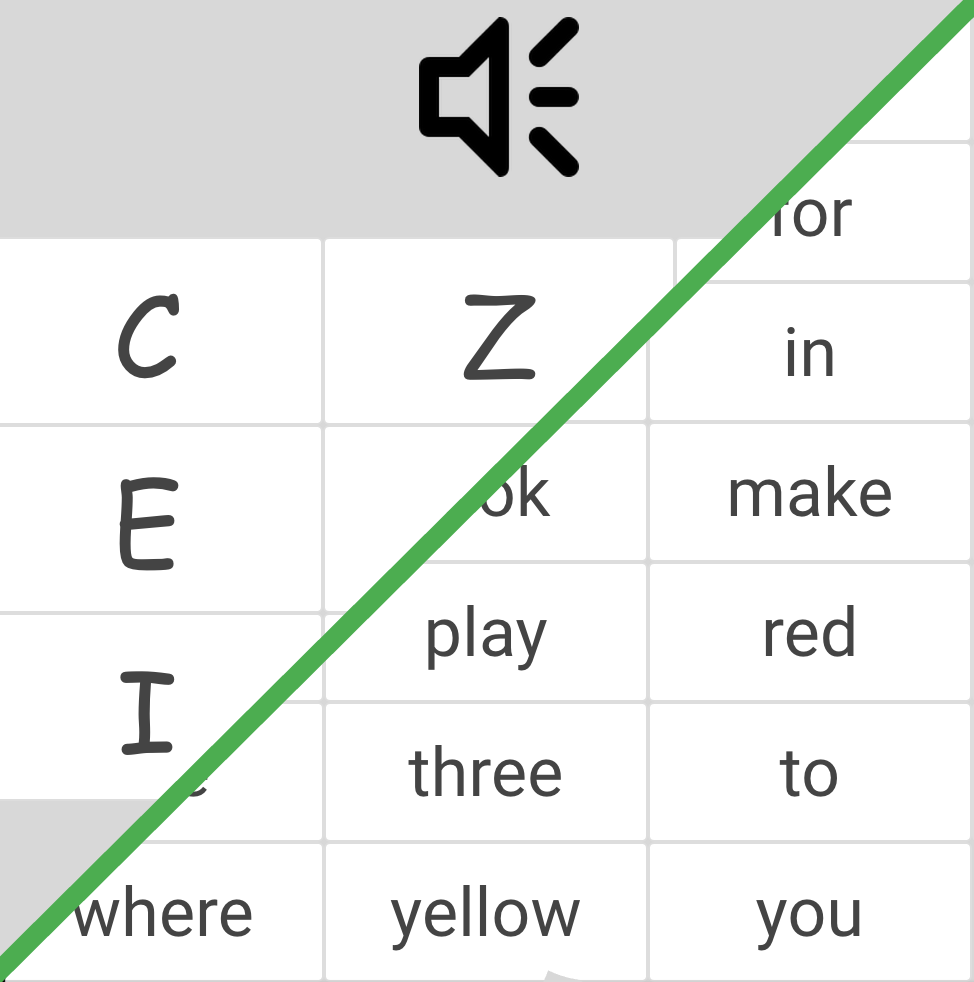
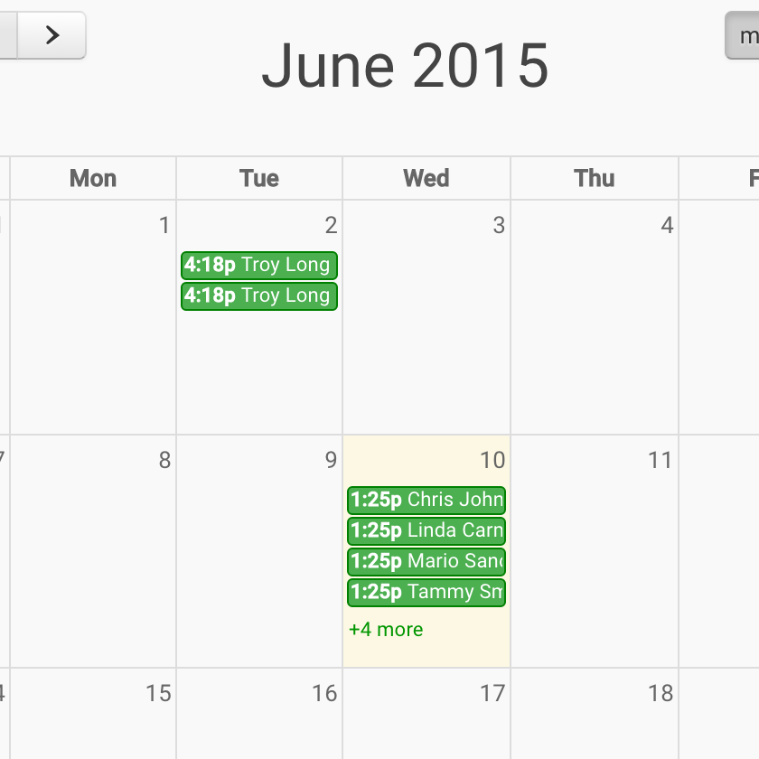
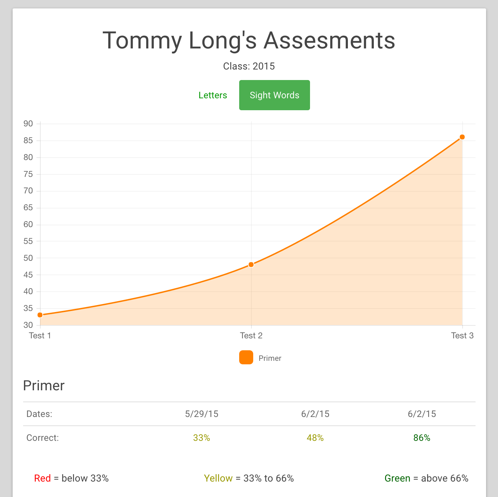

Assesments
Automated & teacher guided tests that are easily saved and stored. Test your students progress on their letter and sight word recognition.

Track
See which students took their assesments. Check the calendar and past assesments to easily keep a testing schedule.

Student Progress
Watch students progress to meet goals. See which students need more attention with a simple class comparisons.
